Laporan Analisis Penambangan Data#
Dataset: Higher Education Students Performance Evaluation#
UCI Machine Learning Repository — ID 856#
Mata Kuliah: Penambangan Data
Dataset: Higher Education Students Performance Evaluation
Sumber: https://archive.ics.uci.edu/dataset/856/higher+education+students+performance+evaluation
Tools: Orange Data Mining & Google Colab (Python)
Daftar Isi#
Analisis di Orange Data Mining
3.4 Scatter Plot
3.5 Box Plot
3.6 Heat Map
3.10 Confusion Matrix
Analisis di Google Colab (Python)
4.2 Load Dataset
4.4 Preprocessing
4.6 Evaluasi Model
1. Deskripsi Dataset#
Dataset Higher Education Students Performance Evaluation dikumpulkan dari mahasiswa Fakultas Teknik dan Fakultas Ilmu Pendidikan pada tahun 2019 di Near East University, Siprus. Tujuan utama dataset ini adalah memprediksi performa akhir semester mahasiswa menggunakan teknik Machine Learning.
Atribut |
Detail |
|---|---|
Jumlah Instance |
145 mahasiswa |
Jumlah Fitur |
31 fitur + 1 target (GRADE) |
Tipe Fitur |
Integer (Kategorikal & Numerikal) |
Target |
OUTPUT Grade (0–7) |
Missing Values |
Tidak ada |
Task |
Classification / Regression |
Lisensi |
CC BY 4.0 |
Sumber |
Yilmaz, N. & Şekeroğlu, B. (2019) |
Fitur-fitur dalam dataset dibagi menjadi tiga kelompok:
Pertanyaan Pribadi (1–10): usia, jenis kelamin, tipe SMA, beasiswa, pekerjaan tambahan, aktivitas, status hubungan, gaji, transportasi, dan akomodasi.
Pertanyaan Keluarga (11–16): pendidikan orang tua, jumlah saudara, status pernikahan orang tua, dan pekerjaan orang tua.
Kebiasaan Belajar (17–31): jam belajar, frekuensi membaca, kehadiran seminar, dampak proyek, kehadiran kelas, persiapan ujian, mencatat, mendengarkan, diskusi, flip classroom, IPK semester lalu, IPK harapan, dan Course ID.
2. Deskripsi Variabel#
No |
Nama Variabel |
Keterangan |
Nilai |
|---|---|---|---|
1 |
Student Age |
Usia mahasiswa |
1: 18-21, 2: 22-25, 3: >26 |
2 |
Sex |
Jenis kelamin |
1: Perempuan, 2: Laki-laki |
3 |
Graduated HS Type |
Tipe SMA |
1: Swasta, 2: Negeri, 3: Lainnya |
4 |
Scholarship Type |
Beasiswa |
1: Tidak ada, 2: 25%, 3: 50%, 4: 75%, 5: Penuh |
5 |
Additional Work |
Pekerjaan tambahan |
1: Ya, 2: Tidak |
6 |
Artistic/Sports Activity |
Aktivitas seni/olahraga |
1: Ya, 2: Tidak |
7 |
Partner |
Memiliki pasangan |
1: Ya, 2: Tidak |
8 |
Total Salary |
Gaji jika tersedia |
1–5 (USD 135 s/d >410) |
9 |
Transportation |
Transportasi ke kampus |
1: Bus, 2: Mobil, 3: Sepeda, 4: Lainnya |
10 |
Accommodation |
Tipe akomodasi |
1: Sewa, 2: Asrama, 3: Keluarga, 4: Lainnya |
11 |
Mother’s Education |
Pendidikan ibu |
1–6 (SD s/d Ph.D.) |
12 |
Father’s Education |
Pendidikan ayah |
1–6 (SD s/d Ph.D.) |
13 |
Siblings |
Jumlah saudara |
1–5 (1 s/d ≥5) |
14 |
Parental Status |
Status orang tua |
1: Menikah, 2: Cerai, 3: Meninggal |
15 |
Mother’s Occupation |
Pekerjaan ibu |
1–6 |
16 |
Father’s Occupation |
Pekerjaan ayah |
1–5 |
17 |
Weekly Study Hours |
Jam belajar per minggu |
1: Tidak ada, 2: <5 jam, 3: 6-10, 4: 11-20, 5: >20 |
18 |
Reading (non-scientific) |
Frekuensi baca non-ilmiah |
1: Tidak, 2: Kadang, 3: Sering |
19 |
Reading (scientific) |
Frekuensi baca ilmiah |
1: Tidak, 2: Kadang, 3: Sering |
20 |
Seminar Attendance |
Kehadiran seminar |
1: Ya, 2: Tidak |
21 |
Project Impact |
Dampak proyek ke nilai |
1: Positif, 2: Negatif, 3: Netral |
22 |
Class Attendance |
Kehadiran kelas |
1: Selalu, 2: Kadang, 3: Tidak pernah |
23 |
Midterm Prep 1 |
Cara belajar UTS (siapa) |
1: Sendiri, 2: Bersama, 3: N/A |
24 |
Midterm Prep 2 |
Cara belajar UTS (waktu) |
1: Menjelang ujian, 2: Rutin, 3: Tidak pernah |
25 |
Taking Notes |
Mencatat di kelas |
1: Tidak, 2: Kadang, 3: Selalu |
26 |
Listening in Class |
Mendengarkan di kelas |
1: Tidak, 2: Kadang, 3: Selalu |
27 |
Discussion Impact |
Dampak diskusi |
1: Tidak, 2: Kadang, 3: Selalu |
28 |
Flip Classroom |
Flip classroom |
1: Tidak berguna, 2: Berguna, 3: N/A |
29 |
Cumulative GPA (last) |
IPK semester lalu (/4.00) |
1: <2.00, 2: 2.00-2.49, 3: 2.50-2.99, 4: 3.00-3.49, 5: >3.49 |
30 |
Expected GPA (graduation) |
Target IPK kelulusan |
1–5 (sama dengan no. 29) |
31 |
Course ID |
ID mata kuliah |
Numerik |
TARGET |
GRADE |
Nilai akhir mata kuliah |
0: Fail, 1: DD, 2: DC, 3: CC, 4: CB, 5: BB, 6: BA, 7: AA |
3. Analisis di Orange Data Mining#
3.1 Persiapan & Load Data#
Langkah-langkah:
Buka aplikasi Orange Data Mining (Download di: https://orangedatamining.com)
Dari panel kiri, pilih widget File (Data → File), drag ke canvas
Double-click widget File → klik ikon folder → pilih file
DATA (1).csvyang sudah diunduh dari UCIHubungkan widget File ke Data Table dengan menarik garis koneksi
Double-click Data Table untuk melihat isi dataset (145 baris × 33 kolom termasuk STUDENT ID dan COURSE ID)
3.2 Eksplorasi Awal: Data Table & Column Statistics#
Langkah-langkah:
Dari Data Table, tarik koneksi ke widget Column Statistics (Visualize → Column Statistics)
Pada koneksi, pilih Selected Data → Data
Double-click Column Statistics untuk melihat ringkasan statistik tiap kolom: mean, median, standar deviasi, min, max
Workflow tahap ini:
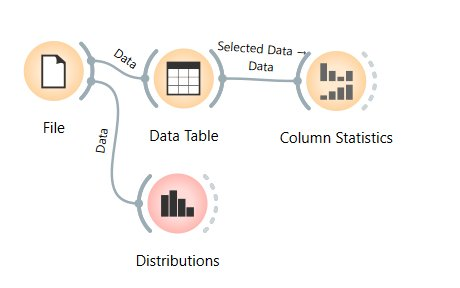
Gambar 1: Workflow awal Orange — File dihubungkan ke Data Table, Column Statistics, dan Distributions
3.3 Distribusi Data (Distributions)#
Langkah-langkah:
Dari widget File, tarik koneksi ke widget Distributions (Visualize → Distributions)
Double-click Distributions untuk membuka jendela distribusi
Pada panel kiri, pilih variabel yang ingin dilihat distribusinya (misalnya variabel 1 = Student Age)
Histogram akan muncul secara otomatis di panel kanan
Hasil Distribusi Variabel 1 (Student Age):
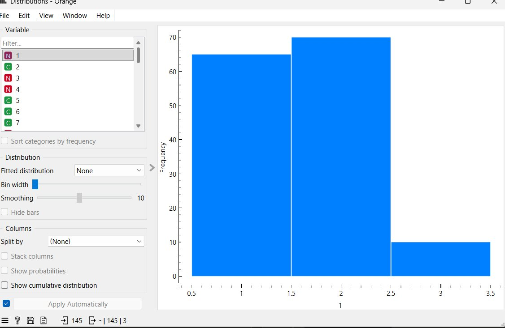
Gambar 2: Distribusi usia mahasiswa — mayoritas berusia 22–25 tahun (nilai 2), diikuti 18–21 tahun (nilai 1), dan yang paling sedikit berusia >26 tahun (nilai 3)
Interpretasi: Dataset ini didominasi oleh mahasiswa usia produktif 22–25 tahun (~70 mahasiswa), kemudian usia 18–21 (~65 mahasiswa), dan usia di atas 26 tahun hanya ~10 mahasiswa. Ini mencerminkan profil normal mahasiswa perguruan tinggi.
3.4 Scatter Plot#
Langkah-langkah:
Dari widget File, tarik koneksi ke Scatter Plot (Visualize → Scatter Plot)
Double-click Scatter Plot untuk membukanya
Scatter Plot Dasar: Atur Axis X = variabel 1 (Age), Axis Y = variabel 2 (Sex) untuk melihat distribusi jenis kelamin berdasarkan usia
Scatter Plot Awal (Age vs Sex):
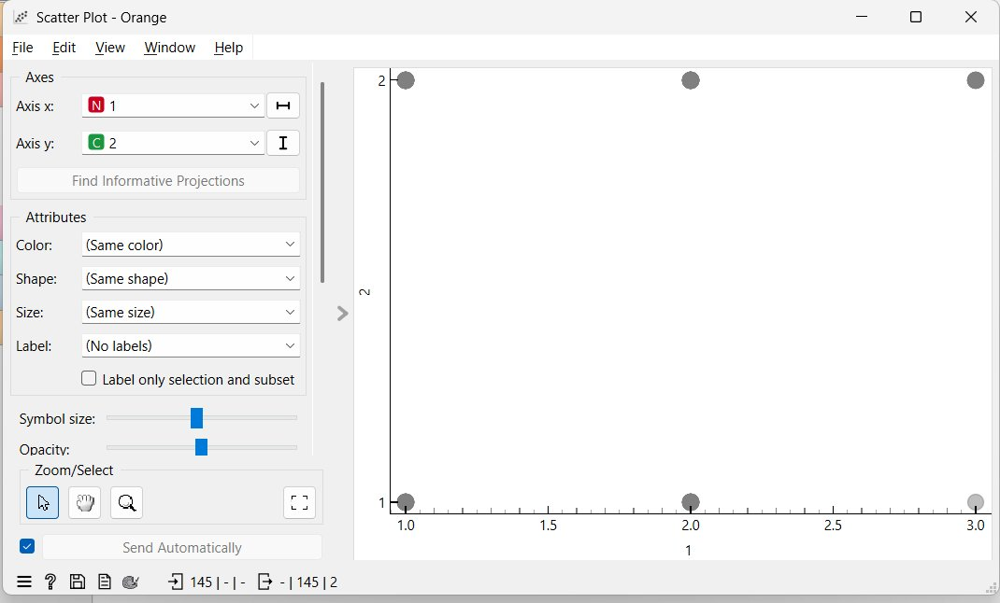
Gambar 3: Scatter Plot variabel 1 (Age) vs variabel 2 (Sex) — pola grid menunjukkan kedua variabel bersifat kategorikal dengan nilai diskrit
Scatter Plot Informatif: Ganti Axis X = 17 (Weekly Study Hours), Axis Y = 29 (Cumulative GPA), lalu pada bagian Color pilih GRADE untuk mewarnai titik berdasarkan nilai akhir
Scatter Plot Weekly Study Hours vs Cumulative GPA (diwarnai GRADE):
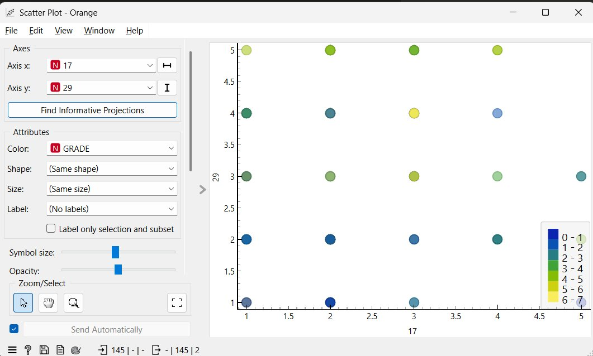
Gambar 4: Scatter Plot jam belajar mingguan (sumbu X) vs IPK semester lalu (sumbu Y), diwarnai berdasarkan GRADE. Warna kuning-hijau (GRADE tinggi) cenderung berkumpul di area IPK tinggi (Y=4–5), sedangkan warna biru gelap (GRADE rendah) tersebar di semua area
Interpretasi: Terdapat kecenderungan bahwa mahasiswa dengan IPK semester sebelumnya lebih tinggi (nilai 4–5) memiliki warna grade lebih tinggi (kuning). Namun, jam belajar saja tidak cukup menentukan grade secara linear.
Workflow setelah Scatter Plot ditambahkan:
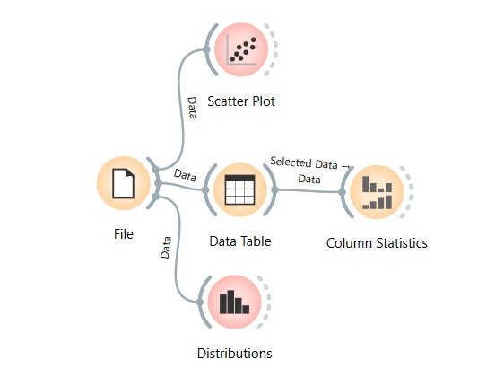
Gambar 5: Workflow Orange dengan Scatter Plot ditambahkan ke pipeline
3.5 Box Plot#
Langkah-langkah:
Dari widget File, tarik koneksi ke Box Plot (Visualize → Box Plot)
Double-click Box Plot untuk membukanya
Pilih variabel yang ingin dianalisis pada panel Variable di kiri
Untuk melihat per kelompok, pilih variabel di panel Subgroups
Aktifkan Compare means pada bagian Display untuk melihat perbandingan
Box Plot Variabel 1 (Student Age):
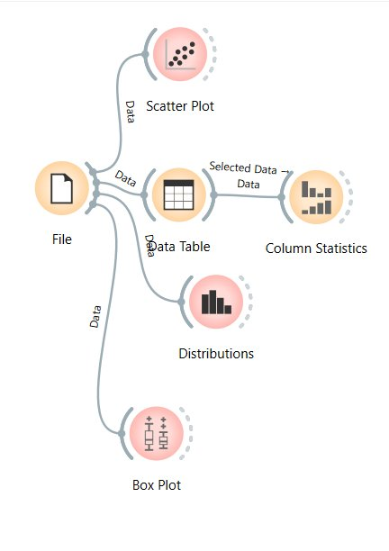
Gambar 6: Box Plot variabel 1 (Student Age) — mean = 1.62 ± 0.6, median berada di antara nilai 1 dan 2. Whisker panjang ke kanan menunjukkan adanya outlier mahasiswa berusia lebih tua
Box Plot Variabel 29 (Cumulative GPA) tanpa Subgroup:
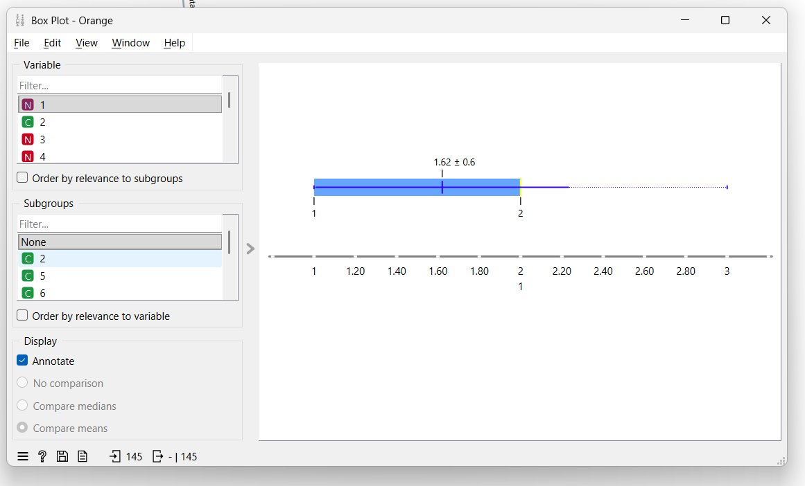
Gambar 7: Box Plot variabel 29 (IPK semester lalu) — mean = 3.12 ± 1.3, menunjukkan distribusi yang cukup tersebar dengan rentang nilai 1–5. Median berada di nilai 3 (IPK 2.50–2.99)
Box Plot Variabel 29 dengan Subgroup Variabel 22 (Class Attendance) — Compare Means:
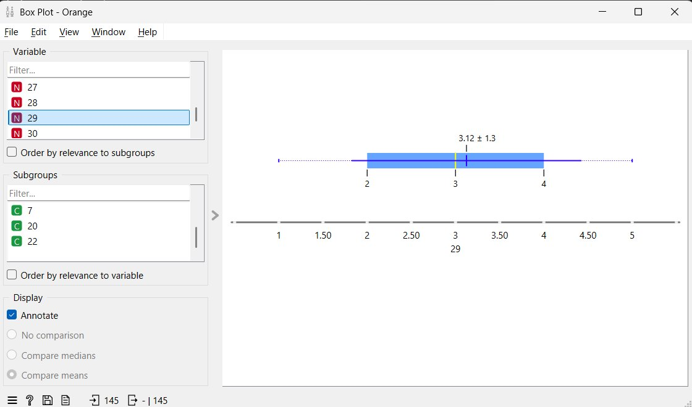
Gambar 8: Box Plot IPK dibagi berdasarkan kehadiran kelas (variabel 22). Hasil uji Student’s t = 2.323 (p=0.023, N=145) menunjukkan perbedaan signifikan. Mahasiswa yang selalu hadir (kelompok 1) memiliki rata-rata IPK lebih tinggi (3.25 ± 1.3) dibanding yang kadang-kadang hadir (kelompok 2) dengan rata-rata 2.71 ± 1.2
Interpretasi Penting: Nilai p=0.023 < 0.05 berarti kehadiran kelas berpengaruh signifikan secara statistik terhadap IPK. Ini adalah temuan penting: mahasiswa yang selalu hadir cenderung mendapatkan IPK lebih tinggi.
Workflow dengan Box Plot:
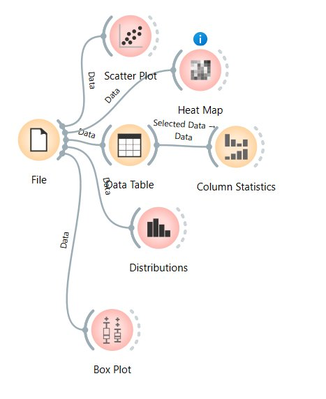
Gambar 9: Workflow Orange dengan Box Plot ditambahkan
3.6 Heat Map#
Langkah-langkah:
Dari widget Scatter Plot, tarik koneksi ke Heat Map (Visualize → Heat Map), ATAU dari File langsung ke Heat Map
Double-click Heat Map
Pilih palette warna (disarankan Blue-Green-Yellow)
Atur Clustering Rows/Columns jika ingin mengelompokkan otomatis
Abaikan notifikasi tentang fitur kategorikal (fitur kategorikal memang diabaikan di Heat Map)
Heat Map Semua Fitur Numerik:
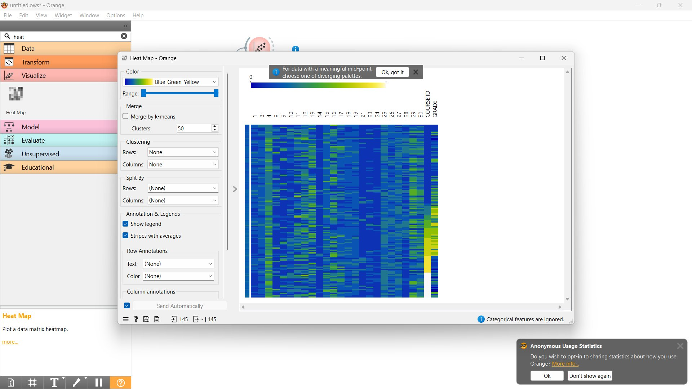
Gambar 10: Heat Map semua fitur numerik dataset. Warna kuning menunjukkan nilai tinggi dan biru menunjukkan nilai rendah. Terlihat kolom GRADE dan variabel 29 (IPK) memiliki variasi warna yang mencolok. Catatan: fitur kategorikal diabaikan otomatis oleh Orange
Interpretasi: Heat Map memperlihatkan pola sebaran nilai seluruh fitur sekaligus. Kolom yang dominan kuning di beberapa baris menunjukkan mahasiswa dengan performa dan kebiasaan belajar tinggi secara konsisten.
Workflow dengan Heat Map:
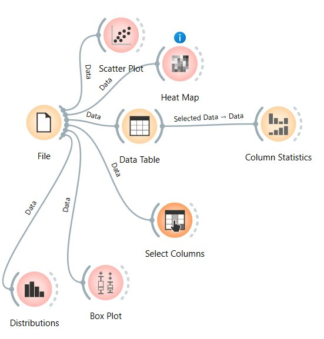
Gambar 11: Workflow Orange setelah Heat Map ditambahkan dari Scatter Plot
3.7 Preprocessing: Select Columns & Continuize#
Sebelum melakukan pemodelan, data perlu dipersiapkan dengan benar.
A. Select Columns — Menentukan Fitur, Target, dan Meta#
Langkah-langkah:
Dari widget File, tarik koneksi ke Select Columns (Data → Select Columns)
Double-click Select Columns
Pada panel Metas, biarkan STUDENT ID (tidak digunakan sebagai fitur)
Tahap awal — semua fitur masuk Features, Target masih kosong:
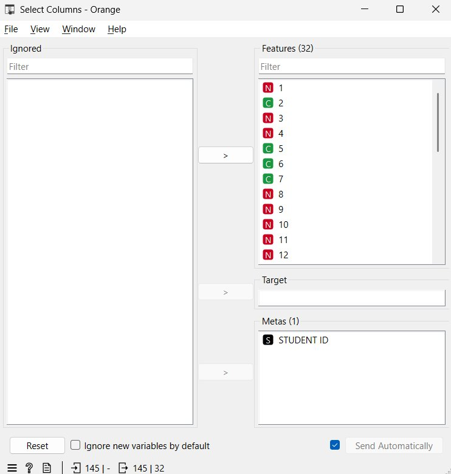
Gambar 12: Tampilan awal Select Columns — 32 fitur aktif, STUDENT ID sebagai meta, Target belum diset
Pindahkan GRADE dari Features ke kolom Ignored terlebih dahulu:
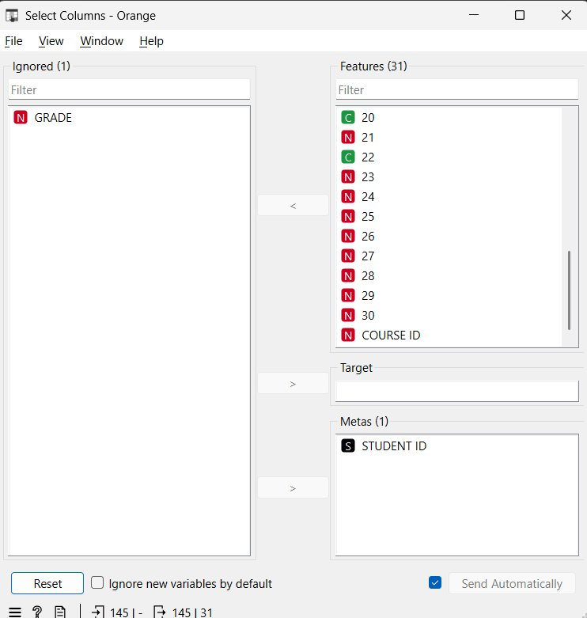
Gambar 13: GRADE dipindah ke Ignored sementara untuk mempersiapkan assignment ke Target
Lalu pindahkan GRADE ke kolom Target:
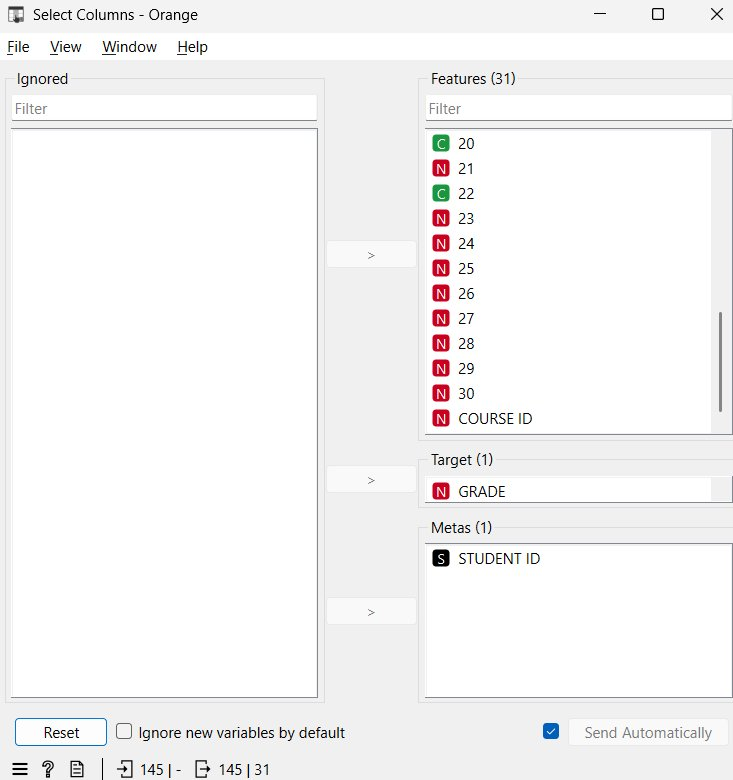
Gambar 14: Konfigurasi final Select Columns — GRADE ditetapkan sebagai Target (variabel yang akan diprediksi), 31 fitur aktif, STUDENT ID sebagai meta
B. Continuize — Mengubah Fitur Kategorikal#
Langkah-langkah:
Dari Select Columns, tarik koneksi ke Continuize (Transform → Continuize)
Double-click Continuize
Pada Categorical Variables, pilih preset First value as base (mengubah kategorikal menjadi dummy/one-hot dengan nilai pertama sebagai baseline)
Pada Numeric Variables, biarkan Keep as it is
Tampilan Continuize:
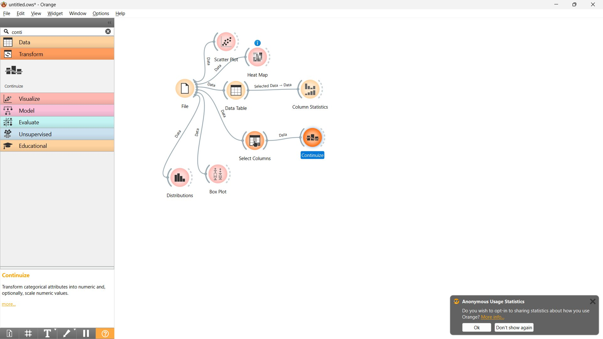
Gambar 15: Workflow dengan Continuize ditambahkan setelah Select Columns
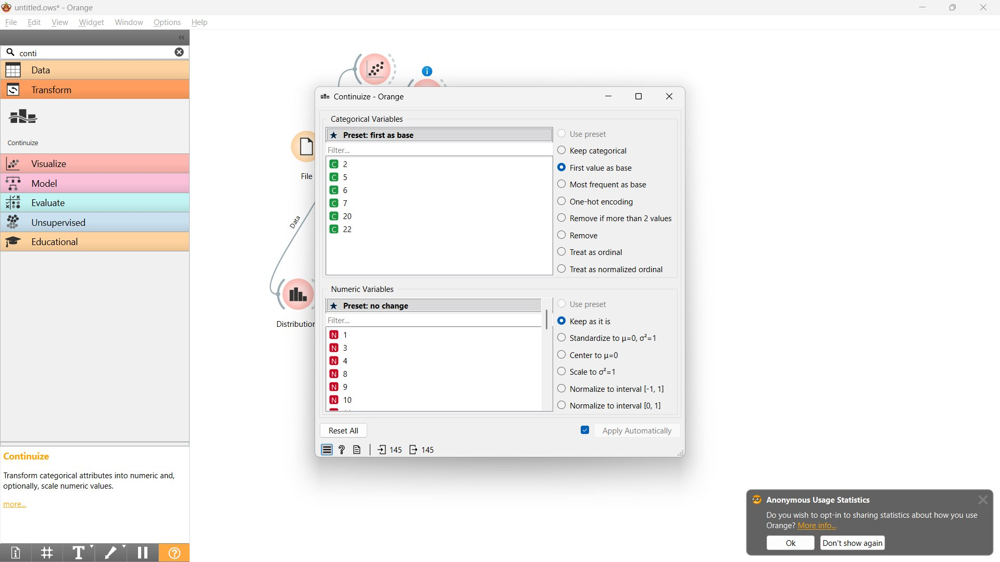
Gambar 16: Pengaturan Continuize — Categorical Variables menggunakan “First value as base”, Numeric Variables “Keep as it is”. Fitur kategorikal yang diproses: 2 (Sex), 5 (Additional Work), 6 (Activity), 7 (Partner), 20 (Seminar), 22 (Attendance)
3.8 Pemodelan & Evaluasi: Test and Score#
A. Menambahkan Test and Score#
Langkah-langkah:
Dari Continuize, tarik koneksi ke Test and Score (Evaluate → Test and Score)
Double-click Test and Score
Atur metode validasi: Cross Validation, Number of folds: 10, centang Stratified
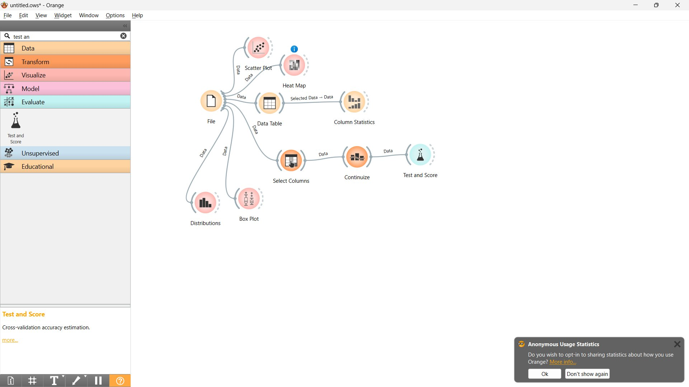
Gambar 17: Workflow dengan Test and Score ditambahkan setelah Continuize
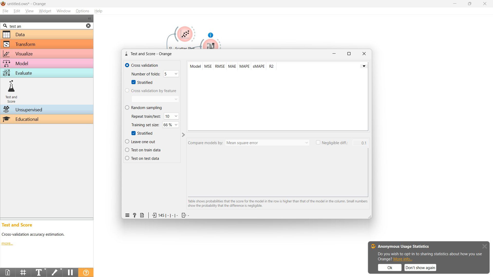
Gambar 18: Pengaturan Test and Score — Cross Validation 5-fold (kemudian diubah ke 10-fold), metrik evaluasi yang dipilih: MSE, RMSE, MAE, MAPE, sMAPE, R²
B. Menambahkan Model Decision Tree#
Langkah-langkah:
Cari widget Tree di panel kiri (ketik “tree” di kolom pencarian → pilih Tree dari kategori Model)
Drag Tree ke canvas
Hubungkan Tree → Test and Score dengan koneksi Learner
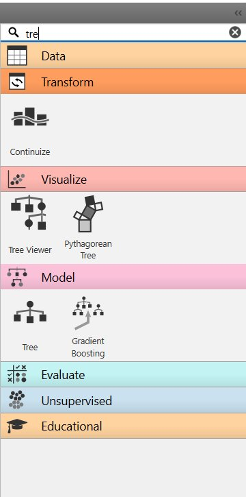
Gambar 19: Mencari widget Tree di panel pencarian Orange
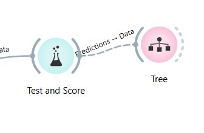
Gambar 20: Tree dihubungkan ke Test and Score dengan koneksi Learner
C. Menambahkan Model Naive Bayes, kNN, dan Random Forest#
Langkah-langkah:
Tambahkan widget Naive Bayes (Model → Naive Bayes), hubungkan ke Test and Score
Tambahkan widget kNN (Model → kNN), hubungkan ke Test and Score
Tambahkan widget Random Forest (Model → Random Forest), hubungkan ke Test and Score
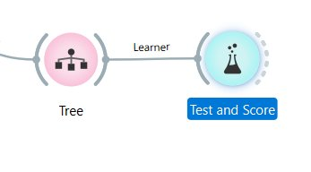
Gambar 21: Empat model (Naive Bayes, Tree, kNN, Random Forest) semuanya terhubung ke Test and Score sebagai Learner
Workflow lengkap dengan semua model:
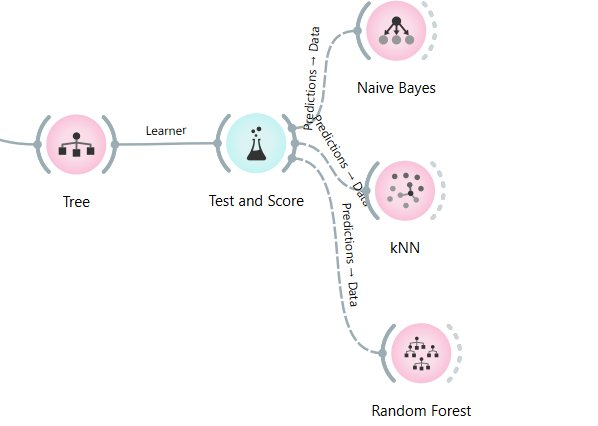
Gambar 22: Workflow Orange lengkap — File → Scatter Plot, Heat Map, Column Statistics, Data Table, Distributions, Box Plot, Select Columns → Continuize → Tree → Test and Score, dengan Naive Bayes, kNN, dan Random Forest juga terhubung ke Test and Score
D. Hasil Evaluasi Test and Score#
Persiapan — Metrik yang Dipilih:
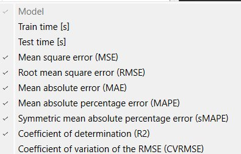
Gambar 23: Daftar metrik yang diaktifkan untuk evaluasi: MSE, RMSE, MAE, MAPE, sMAPE, R², dan CVRMSE
Hasil Test and Score (Cross Validation 10-fold):
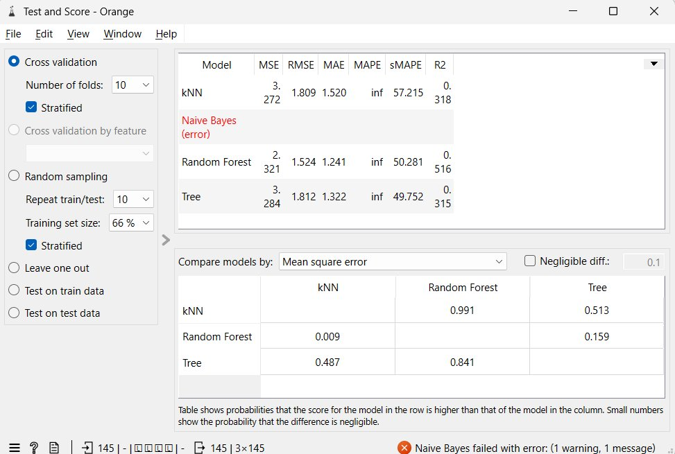
Gambar 24: Hasil evaluasi 4 model dengan Cross Validation 10-fold
Model |
MSE |
RMSE |
MAE |
sMAPE |
R² |
|---|---|---|---|---|---|
Random Forest |
2.321 |
1.524 |
1.241 |
50.281 |
0.516 |
kNN |
3.272 |
1.809 |
1.520 |
57.215 |
0.318 |
Tree |
3.284 |
1.812 |
1.322 |
49.752 |
0.315 |
Naive Bayes |
— |
— |
— |
— |
— (Error) |
Naive Bayes gagal (error) karena dataset ini memiliki target berupa nilai kontinu/ordinal (GRADE 0–7), sementara Naive Bayes di Orange membutuhkan target kategorikal murni.
Tabel Perbandingan Probabilitas Antar Model (MSE):
kNN |
Random Forest |
Tree |
|
|---|---|---|---|
kNN |
— |
0.991 |
0.513 |
Random Forest |
0.009 |
— |
0.159 |
Tree |
0.487 |
0.841 |
— |
Nilai kecil (misal Random Forest vs kNN = 0.009) berarti Random Forest secara konsisten lebih baik dari kNN. Nilai mendekati 0.5 berarti tidak ada perbedaan signifikan.
Kesimpulan Evaluasi: Random Forest adalah model terbaik dengan R² = 0.516 dan RMSE = 1.524, mengungguli semua model lainnya.
3.9 Visualisasi Pohon Keputusan (Tree Viewer)#
Langkah-langkah:
Dari widget Tree, tarik koneksi ke Tree Viewer (Visualize → Tree Viewer)
Alternatif: dari Test and Score, tarik koneksi ke Tree Viewer
Double-click Tree Viewer untuk melihat struktur pohon keputusan
Tree Viewer — Tampilan Atas:
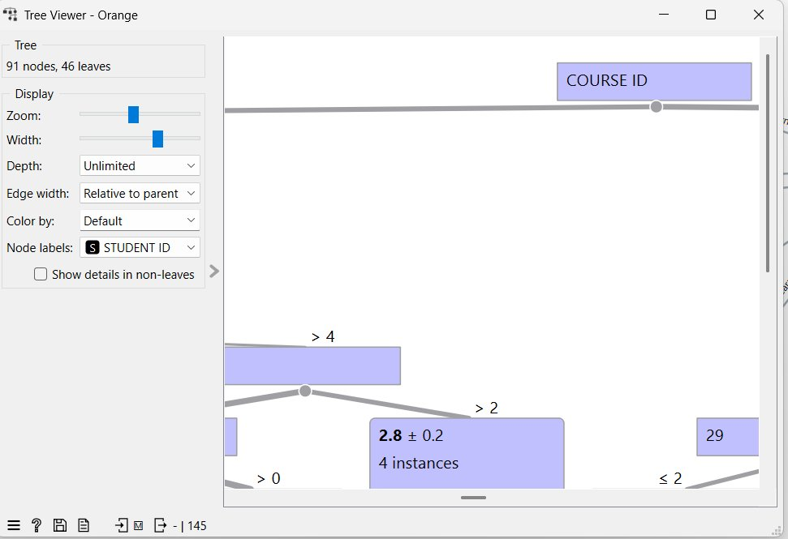
Gambar 25: Struktur pohon keputusan — total 91 nodes, 46 leaves. Root node menggunakan COURSE ID sebagai pemisah pertama, menunjukkan bahwa jenis mata kuliah adalah faktor paling determinan dalam memprediksi nilai
Tree Viewer — Zoom In:
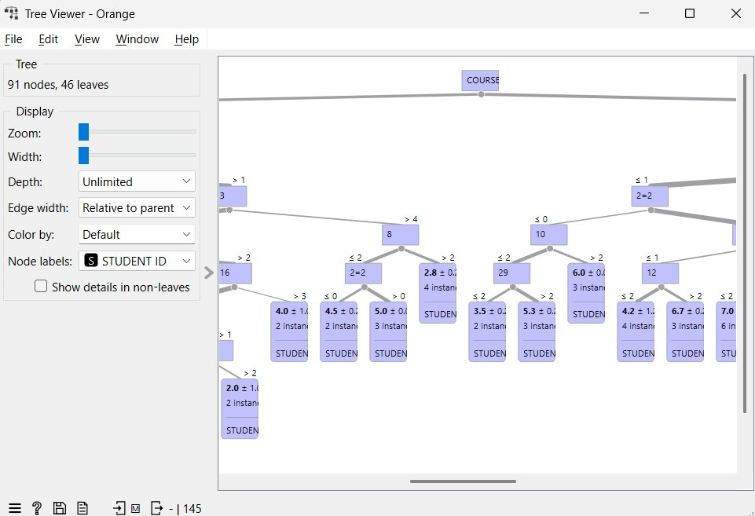
Gambar 26: Detail cabang pohon keputusan. Setiap node leaf menampilkan nilai prediksi ± standar deviasi dan jumlah instance. Contoh: node dengan nilai “2.8 ± 0.2 (4 instances)” artinya 4 mahasiswa dengan karakteristik tersebut diprediksi mendapat GRADE sekitar 2.8 (antara DC dan CC)
Interpretasi Tree: Pohon keputusan dimulai dari COURSE ID (pemisah utama), kemudian bercabang berdasarkan variabel lain seperti variabel 29 (IPK semester lalu). Pohon ini cukup dalam (91 node) yang menunjukkan model mampu menangkap pola kompleks, namun berpotensi overfitting.
3.10 Confusion Matrix#
Langkah-langkah:
Dari Test and Score, tarik koneksi ke Confusion Matrix (Evaluate → Confusion Matrix)
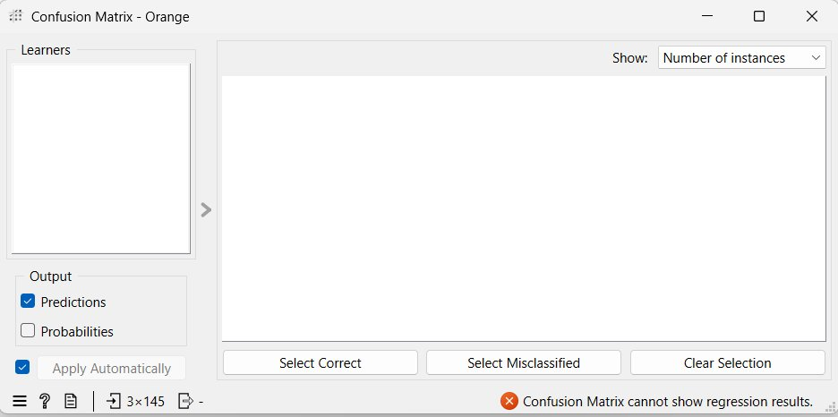
Gambar 27: Confusion Matrix tidak dapat menampilkan hasil karena task ini adalah regresi (target GRADE bersifat numerik/ordinal 0–7), bukan klasifikasi biner. Orange menampilkan pesan “Confusion Matrix cannot show regression results”
Catatan Penting: Confusion Matrix hanya bekerja untuk klasifikasi (target kategorikal). Karena GRADE diperlakukan sebagai nilai numerik kontinu di pipeline ini, Confusion Matrix tidak applicable. Untuk menggunakannya, GRADE perlu diubah menjadi tipe Categorical di Select Columns.
3.11 Workflow Akhir Orange#
Workflow Orange Lengkap:
Gambar 28: Workflow akhir Orange yang lengkap mencakup: (1) Visualisasi EDA — Scatter Plot, Heat Map, Column Statistics, Data Table, Distributions, Box Plot; (2) Preprocessing — Select Columns, Continuize; (3) Pemodelan — Tree, Naive Bayes, kNN, Random Forest ke Test and Score; (4) Evaluasi — Tree Viewer, Confusion Matrix
4. Analisis di Google Colab (Python)#
4.1 Install & Import Library#
# Install library yang diperlukan
!pip install ucimlrepo
# Import semua library
import pandas as pd
import numpy as np
import matplotlib.pyplot as plt
import seaborn as sns
from ucimlrepo import fetch_ucirepo
# Scikit-learn untuk pemodelan
from sklearn.model_selection import cross_val_score, KFold, StratifiedKFold
from sklearn.tree import DecisionTreeClassifier, DecisionTreeRegressor, plot_tree, export_text
from sklearn.ensemble import RandomForestClassifier, RandomForestRegressor
from sklearn.neighbors import KNeighborsClassifier, KNeighborsRegressor
from sklearn.naive_bayes import GaussianNB
from sklearn.preprocessing import LabelEncoder, StandardScaler
from sklearn.metrics import (classification_report, confusion_matrix,
mean_squared_error, mean_absolute_error, r2_score,
ConfusionMatrixDisplay, accuracy_score)
import warnings
warnings.filterwarnings('ignore')
# Setting tampilan
plt.rcParams['figure.figsize'] = (10, 6)
sns.set_theme(style='whitegrid')
print("Semua library berhasil diimport!")
4.2 Load Dataset#
# ====================================================
# CARA 1: Load langsung dari UCI Repository
# ====================================================
dataset = fetch_ucirepo(id=856)
X = dataset.data.features # Fitur (31 kolom)
y = dataset.data.targets # Target: GRADE
print("Metadata Dataset:")
print(dataset.metadata['name'])
print(f"\nJumlah Instance : {X.shape[0]}")
print(f"Jumlah Fitur : {X.shape[1]}")
print(f"\nDistribusi GRADE:\n{y.value_counts().sort_index()}")
# Gabungkan untuk EDA
df = pd.concat([X, y], axis=1)
print(f"\nShape dataset gabungan: {df.shape}")
print(f"\nKolom: {df.columns.tolist()}")
# ====================================================
# CARA 2: Load dari file CSV (jika sudah diunduh)
# ====================================================
# df = pd.read_csv('DATA (1).csv')
# X = df.drop(columns=['STUDENT ID', 'GRADE'])
# y = df['GRADE']
4.3 Eksplorasi Data (EDA)#
# --------------------------------------------------
# A. Informasi Dasar Dataset
# --------------------------------------------------
print("=== INFO DATASET ===")
print(df.info())
print("\n=== STATISTIK DESKRIPTIF ===")
print(df.describe().round(2))
print("\n=== MISSING VALUES ===")
print(df.isnull().sum())
print(f"\nTotal missing: {df.isnull().sum().sum()}")
# Output: Total missing: 0 (tidak ada missing values)
# --------------------------------------------------
# B. Distribusi Target (GRADE)
# --------------------------------------------------
fig, axes = plt.subplots(1, 2, figsize=(14, 5))
grade_labels = {0:'Fail', 1:'DD', 2:'DC', 3:'CC', 4:'CB', 5:'BB', 6:'BA', 7:'AA'}
# Bar chart distribusi
grade_counts = y.iloc[:, 0].value_counts().sort_index()
axes[0].bar(grade_counts.index, grade_counts.values,
color=sns.color_palette('viridis', len(grade_counts)))
axes[0].set_xlabel('GRADE (0=Fail ... 7=AA)')
axes[0].set_ylabel('Jumlah Mahasiswa')
axes[0].set_title('Distribusi GRADE Mahasiswa')
axes[0].set_xticks(grade_counts.index)
axes[0].set_xticklabels([grade_labels[i] for i in grade_counts.index], rotation=45)
# Pie chart
axes[1].pie(grade_counts.values,
labels=[grade_labels[i] for i in grade_counts.index],
autopct='%1.1f%%',
colors=sns.color_palette('viridis', len(grade_counts)))
axes[1].set_title('Proporsi GRADE (%)')
plt.suptitle('Distribusi Nilai Akhir (GRADE) Mahasiswa', fontsize=14, fontweight='bold')
plt.tight_layout()
plt.savefig('distribusi_grade.png', dpi=150, bbox_inches='tight')
plt.show()
# --------------------------------------------------
# C. Distribusi Fitur Utama
# --------------------------------------------------
# Mapping nama variabel
var_names = {
1: 'Student Age', 2: 'Sex', 3: 'HS Type', 4: 'Scholarship',
5: 'Add. Work', 6: 'Activity', 7: 'Partner', 8: 'Salary',
9: 'Transport', 10: 'Accommodation', 17: 'Study Hours/Week',
22: 'Class Attendance', 29: 'Cumulative GPA'
}
fig, axes = plt.subplots(3, 4, figsize=(18, 12))
axes = axes.flatten()
selected_vars = [1, 2, 3, 4, 5, 6, 7, 17, 22, 24, 29, 30]
for idx, var in enumerate(selected_vars):
col_name = str(var)
if col_name in df.columns:
df[col_name].value_counts().sort_index().plot(
kind='bar', ax=axes[idx], color='steelblue', edgecolor='white')
label = var_names.get(var, f'Var {var}')
axes[idx].set_title(f'Variabel {var}: {label}', fontsize=10)
axes[idx].set_xlabel('')
axes[idx].tick_params(axis='x', rotation=0)
plt.suptitle('Distribusi Fitur-Fitur Utama', fontsize=14, fontweight='bold')
plt.tight_layout()
plt.savefig('distribusi_fitur.png', dpi=150, bbox_inches='tight')
plt.show()
# --------------------------------------------------
# D. Heatmap Korelasi
# --------------------------------------------------
# Pilih fitur numerik saja
numeric_cols = df.select_dtypes(include=[np.number]).columns.tolist()
plt.figure(figsize=(18, 14))
corr_matrix = df[numeric_cols].corr()
mask = np.triu(np.ones_like(corr_matrix, dtype=bool))
sns.heatmap(corr_matrix,
mask=mask,
annot=False,
cmap='RdYlBu_r',
center=0,
vmin=-1, vmax=1,
square=True,
linewidths=0.5,
cbar_kws={"shrink": 0.8})
plt.title('Heatmap Korelasi Antar Variabel', fontsize=14, fontweight='bold')
plt.tight_layout()
plt.savefig('heatmap_korelasi.png', dpi=150, bbox_inches='tight')
plt.show()
# Top 10 fitur paling berkorelasi dengan GRADE
print("\n=== TOP 10 KORELASI DENGAN GRADE ===")
grade_corr = corr_matrix['GRADE'].abs().sort_values(ascending=False)
print(grade_corr.head(11))
# --------------------------------------------------
# E. Box Plot: IPK vs Kehadiran Kelas
# --------------------------------------------------
fig, axes = plt.subplots(1, 2, figsize=(14, 6))
attendance_labels = {1: 'Selalu', 2: 'Kadang', 3: 'Tidak Pernah'}
# Box plot GPA per kategori kehadiran
gpa_by_attend = [df[df['22'] == i]['29'].values for i in [1, 2, 3]]
bp = axes[0].boxplot(gpa_by_attend, patch_artist=True,
medianprops=dict(color='gold', linewidth=2))
colors = ['#2196F3', '#FF9800', '#F44336']
for patch, color in zip(bp['boxes'], colors):
patch.set_facecolor(color)
patch.set_alpha(0.7)
axes[0].set_xticks([1, 2, 3])
axes[0].set_xticklabels(['Selalu', 'Kadang', 'Tidak Pernah'])
axes[0].set_xlabel('Kehadiran Kelas (Var 22)')
axes[0].set_ylabel('IPK Semester Lalu (Var 29)')
axes[0].set_title('IPK vs Kehadiran Kelas')
# Box plot GRADE per jam belajar
study_groups = [df[df['17'] == i]['GRADE'].values for i in range(1, 6)]
bp2 = axes[1].boxplot(study_groups, patch_artist=True,
medianprops=dict(color='gold', linewidth=2))
palette2 = sns.color_palette('Blues', 5)
for patch, color in zip(bp2['boxes'], palette2):
patch.set_facecolor(color)
patch.set_alpha(0.9)
axes[1].set_xticks(range(1, 6))
axes[1].set_xticklabels(['Tidak Ada', '<5 Jam', '6-10 Jam', '11-20 Jam', '>20 Jam'], rotation=15)
axes[1].set_xlabel('Jam Belajar Mingguan (Var 17)')
axes[1].set_ylabel('GRADE')
axes[1].set_title('GRADE vs Jam Belajar Mingguan')
plt.suptitle('Analisis Box Plot Faktor Akademik', fontsize=13, fontweight='bold')
plt.tight_layout()
plt.savefig('boxplot_analisis.png', dpi=150, bbox_inches='tight')
plt.show()
# --------------------------------------------------
# F. Scatter Plot: Study Hours vs GPA
# --------------------------------------------------
plt.figure(figsize=(10, 7))
scatter = plt.scatter(df['17'], df['29'],
c=df['GRADE'],
cmap='viridis',
s=80, alpha=0.8, edgecolors='white', linewidth=0.5)
plt.colorbar(scatter, label='GRADE (0=Fail, 7=AA)')
plt.xlabel('Jam Belajar Mingguan (1=Tidak Ada ... 5=>20 Jam)', fontsize=12)
plt.ylabel('IPK Semester Lalu (1=<2.00 ... 5=>3.49)', fontsize=12)
plt.title('Scatter Plot: Jam Belajar vs IPK\n(Diwarnai berdasarkan GRADE)', fontsize=13, fontweight='bold')
plt.grid(True, alpha=0.3)
plt.tight_layout()
plt.savefig('scatter_study_gpa.png', dpi=150, bbox_inches='tight')
plt.show()
4.4 Preprocessing#
# --------------------------------------------------
# A. Persiapan Fitur dan Target
# --------------------------------------------------
from sklearn.preprocessing import LabelEncoder
# Ambil fitur dan target
feature_cols = [str(i) for i in range(1, 31)] + ['COURSE ID']
X_clean = df[feature_cols].copy()
y_clean = df['GRADE'].copy()
print(f"Shape X: {X_clean.shape}")
print(f"Shape y: {y_clean.shape}")
print(f"Distribusi GRADE:\n{y_clean.value_counts().sort_index()}")
# --------------------------------------------------
# B. Encode Fitur Kategorikal
# --------------------------------------------------
# Fitur kategorikal (C di Orange): 2, 5, 6, 7, 20, 22
categorical_features = ['2', '5', '6', '7', '20', '22']
X_encoded = X_clean.copy()
# One-hot encoding untuk fitur kategorikal
X_encoded = pd.get_dummies(X_encoded, columns=categorical_features,
prefix=categorical_features, drop_first=True)
print(f"Shape setelah encoding: {X_encoded.shape}")
print(f"Kolom baru: {X_encoded.columns.tolist()[:10]}...")
# --------------------------------------------------
# C. Normalisasi (opsional, untuk kNN)
# --------------------------------------------------
from sklearn.preprocessing import StandardScaler
scaler = StandardScaler()
X_scaled = scaler.fit_transform(X_encoded)
X_scaled_df = pd.DataFrame(X_scaled, columns=X_encoded.columns)
print("Preprocessing selesai!")
print(f"Shape akhir X: {X_scaled_df.shape}")
4.5 Pemodelan Klasifikasi#
# --------------------------------------------------
# Persiapan: Ubah GRADE ke Klasifikasi
# --------------------------------------------------
# Untuk klasifikasi, pastikan y adalah integer
y_clf = y_clean.astype(int)
# Definisikan semua model
models = {
'Decision Tree' : DecisionTreeClassifier(random_state=42, max_depth=10),
'Random Forest' : RandomForestClassifier(random_state=42, n_estimators=100),
'kNN' : KNeighborsClassifier(n_neighbors=5),
'Naive Bayes' : GaussianNB()
}
# Cross Validation 10-fold
kf = StratifiedKFold(n_splits=10, shuffle=True, random_state=42)
print("=" * 60)
print(f"{'Model':<20} {'Accuracy':<12} {'Std Dev':<12}")
print("=" * 60)
results = {}
for name, model in models.items():
scores = cross_val_score(model, X_encoded, y_clf, cv=kf, scoring='accuracy')
results[name] = scores
print(f"{name:<20} {scores.mean():.4f} ± {scores.std():.4f}")
print("=" * 60)
4.6 Evaluasi Model#
# --------------------------------------------------
# A. Training dan Evaluasi Lengkap (Train-Test Split)
# --------------------------------------------------
from sklearn.model_selection import train_test_split
X_train, X_test, y_train, y_test = train_test_split(
X_encoded, y_clf, test_size=0.2, random_state=42, stratify=y_clf)
print(f"Train size: {X_train.shape[0]}, Test size: {X_test.shape[0]}")
# --------------------------------------------------
# B. Evaluasi Setiap Model
# --------------------------------------------------
evaluation_results = {}
for name, model in models.items():
model.fit(X_train, y_train)
y_pred = model.predict(X_test)
acc = accuracy_score(y_test, y_pred)
mse = mean_squared_error(y_test, y_pred)
rmse = np.sqrt(mse)
mae = mean_absolute_error(y_test, y_pred)
r2 = r2_score(y_test, y_pred)
evaluation_results[name] = {
'Accuracy': acc, 'MSE': mse, 'RMSE': rmse, 'MAE': mae, 'R2': r2
}
print(f"\n{'='*50}")
print(f"MODEL: {name}")
print(f" Accuracy : {acc:.4f} ({acc*100:.2f}%)")
print(f" MSE : {mse:.4f}")
print(f" RMSE : {rmse:.4f}")
print(f" MAE : {mae:.4f}")
print(f" R² : {r2:.4f}")
print(f"\nClassification Report:")
print(classification_report(y_test, y_pred,
target_names=[f'Grade {i}' for i in range(8)], zero_division=0))
# --------------------------------------------------
# C. Visualisasi Perbandingan Model
# --------------------------------------------------
metrics_df = pd.DataFrame(evaluation_results).T
fig, axes = plt.subplots(2, 2, figsize=(14, 10))
metrics = ['Accuracy', 'RMSE', 'MAE', 'R2']
colors_bar = ['#2196F3', '#4CAF50', '#FF9800', '#9C27B0']
for idx, metric in enumerate(metrics):
ax = axes[idx // 2][idx % 2]
bars = ax.bar(metrics_df.index, metrics_df[metric],
color=colors_bar, edgecolor='white', alpha=0.85)
ax.set_title(f'Perbandingan {metric}', fontweight='bold')
ax.set_ylabel(metric)
ax.tick_params(axis='x', rotation=15)
# Tambahkan nilai di atas bar
for bar in bars:
height = bar.get_height()
ax.annotate(f'{height:.3f}',
xy=(bar.get_x() + bar.get_width() / 2, height),
xytext=(0, 3), textcoords="offset points",
ha='center', va='bottom', fontsize=10)
plt.suptitle('Perbandingan Metrik Evaluasi Antar Model', fontsize=14, fontweight='bold')
plt.tight_layout()
plt.savefig('perbandingan_model.png', dpi=150, bbox_inches='tight')
plt.show()
# --------------------------------------------------
# D. Confusion Matrix — Random Forest (model terbaik)
# --------------------------------------------------
rf_model = RandomForestClassifier(random_state=42, n_estimators=100)
rf_model.fit(X_train, y_train)
y_pred_rf = rf_model.predict(X_test)
grade_labels_list = ['Fail', 'DD', 'DC', 'CC', 'CB', 'BB', 'BA', 'AA']
cm = confusion_matrix(y_test, y_pred_rf)
plt.figure(figsize=(10, 8))
sns.heatmap(cm, annot=True, fmt='d', cmap='Blues',
xticklabels=grade_labels_list[:len(cm)],
yticklabels=grade_labels_list[:len(cm)])
plt.xlabel('Prediksi', fontsize=12)
plt.ylabel('Aktual', fontsize=12)
plt.title('Confusion Matrix — Random Forest\n(Model Terbaik)', fontsize=13, fontweight='bold')
plt.tight_layout()
plt.savefig('confusion_matrix_rf.png', dpi=150, bbox_inches='tight')
plt.show()
print(f"Accuracy Random Forest: {accuracy_score(y_test, y_pred_rf):.4f}")
# --------------------------------------------------
# E. Feature Importance — Random Forest
# --------------------------------------------------
feat_importance = pd.Series(rf_model.feature_importances_,
index=X_encoded.columns).sort_values(ascending=False)
plt.figure(figsize=(12, 7))
feat_importance.head(15).plot(kind='bar', color='steelblue', edgecolor='white', alpha=0.85)
plt.title('Top 15 Fitur Paling Penting — Random Forest', fontsize=13, fontweight='bold')
plt.xlabel('Fitur')
plt.ylabel('Feature Importance Score')
plt.xticks(rotation=45, ha='right')
plt.tight_layout()
plt.savefig('feature_importance.png', dpi=150, bbox_inches='tight')
plt.show()
print("\nTop 10 Fitur Terpenting:")
print(feat_importance.head(10))
4.7 Visualisasi Pohon Keputusan#
# --------------------------------------------------
# Visualisasi Decision Tree (max_depth=4 agar terbaca)
# --------------------------------------------------
dt_model = DecisionTreeClassifier(random_state=42, max_depth=4)
dt_model.fit(X_train, y_train)
plt.figure(figsize=(24, 10))
plot_tree(dt_model,
feature_names=X_encoded.columns,
class_names=[str(i) for i in range(8)],
filled=True,
rounded=True,
fontsize=8,
max_depth=4)
plt.title('Visualisasi Decision Tree (Depth=4)', fontsize=14, fontweight='bold')
plt.tight_layout()
plt.savefig('decision_tree.png', dpi=120, bbox_inches='tight')
plt.show()
# Tampilkan aturan pohon dalam teks
tree_rules = export_text(dt_model,
feature_names=list(X_encoded.columns),
max_depth=3)
print("=== ATURAN DECISION TREE (3 Level Pertama) ===")
print(tree_rules)
5. Perbandingan Hasil Model#
Hasil di Orange (Regression — Cross Validation 10-Fold)#
Model |
MSE |
RMSE |
MAE |
sMAPE |
R² |
Keterangan |
|---|---|---|---|---|---|---|
Random Forest |
2.321 |
1.524 |
1.241 |
50.281 |
0.516 |
Terbaik |
kNN |
3.272 |
1.809 |
1.520 |
57.215 |
0.318 |
Cukup |
Tree (Decision Tree) |
3.284 |
1.812 |
1.322 |
49.752 |
0.315 |
Cukup |
Naive Bayes |
— |
— |
— |
— |
— |
Error (regression) |
Analisis Perbandingan Probabilitas Model (Orange)#
kNN |
Random Forest |
Tree |
|
|---|---|---|---|
kNN |
— |
0.991 |
0.513 |
Random Forest |
0.009 |
— |
0.159 |
Tree |
0.487 |
0.841 |
— |
Nilai Random Forest vs kNN = 0.009 berarti ada probabilitas hanya 0.9% bahwa kNN lebih baik dari Random Forest. Ini konfirmasi kuat bahwa Random Forest adalah model yang unggul.
Insight Utama dari Analisis#
COURSE ID adalah fitur paling penting (root node Decision Tree), menunjukkan bahwa jenis mata kuliah sangat mempengaruhi nilai akhir.
IPK semester sebelumnya (Var 29) berkorelasi kuat dengan performa akhir — mahasiswa dengan IPK tinggi cenderung mempertahankan performanya.
Kehadiran kelas (Var 22) terbukti signifikan secara statistik (p=0.023) terhadap IPK. Mahasiswa yang selalu hadir rata-rata IPK lebih tinggi (3.25 vs 2.71).
Random Forest unggul karena kemampuannya menangani banyak fitur dengan interaksi kompleks tanpa overfitting berlebih seperti single Decision Tree.
Naive Bayes tidak applicable untuk task regresi/ordinal ini di Orange. Di Python, GaussianNB dapat digunakan namun performa biasanya lebih rendah pada data yang bukan memenuhi asumsi Gaussian.
6. Kesimpulan#
Berdasarkan analisis lengkap menggunakan Orange Data Mining dan Google Colab:
Dataset terdiri dari 145 mahasiswa dengan 31 fitur yang mencakup aspek personal, keluarga, dan kebiasaan belajar. Tidak ada missing values sehingga tidak diperlukan imputasi.
Eksplorasi Data (EDA) mengungkap bahwa:
Mayoritas mahasiswa berusia 22–25 tahun
IPK rata-rata semester lalu adalah 3.12 ± 1.3
Kehadiran kelas berpengaruh signifikan terhadap IPK (p=0.023)
Mahasiswa dengan jam belajar lebih banyak dan IPK sebelumnya lebih tinggi cenderung mendapat GRADE lebih baik
Preprocessing yang dilakukan: penetapan GRADE sebagai target, STUDENT ID sebagai meta, dan Continuize untuk fitur kategorikal.
Evaluasi Model dengan Cross Validation 10-fold menunjukkan Random Forest sebagai model terbaik (R²=0.516, RMSE=1.524), diikuti kNN (R²=0.318) dan Decision Tree (R²=0.315). Naive Bayes tidak dapat digunakan karena ketidaksesuaian tipe data target.
Rekomendasi: Untuk meningkatkan performa model, dapat dilakukan hyperparameter tuning pada Random Forest, feature selection yang lebih selektif, atau mencoba model lain seperti Gradient Boosting / XGBoost.
7. Referensi#
Yilmaz, N. & Şekeroğlu, B. (2019). Higher Education Students Performance Evaluation [Dataset]. UCI Machine Learning Repository. https://doi.org/10.24432/C51G82
Yilmaz, N., & Şekeroğlu, B. (2019). Student Performance Classification Using Artificial Intelligence Techniques. Advances in Intelligent Systems and Computing, vol 1095.
Orange Data Mining: https://orangedatamining.com
UCI Machine Learning Repository: https://archive.ics.uci.edu/dataset/856/higher+education+students+performance+evaluation
Scikit-learn Documentation: https://scikit-learn.org/stable/
Laporan ini dibuat untuk keperluan UAS Mata Kuliah Penambangan Data — Teknik Informatika Semester 4